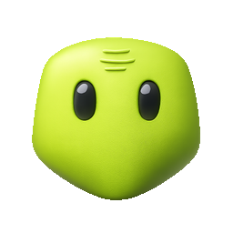
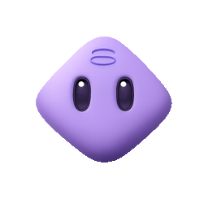
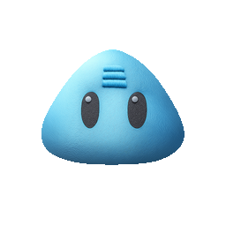
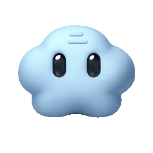

Tarefas em abas
Cada Toph abre a própria aba. Vários Tophs e várias tarefas ficam abertos ao mesmo tempo.
Revisem o checkout enquanto eu vejo os dados.
✓Toph
tarefa abertaTophs vivem dentro do seu projeto. Trabalham sozinhos ou em grupo, com o motor, as ferramentas e o histórico de cada tarefa.
Toph roda onde o código está. Abra tarefas, arquivos e terminais no mesmo lugar, sem levar o contexto pra fora.
Cada Toph abre a própria aba. Vários Tophs e várias tarefas ficam abertos ao mesmo tempo.
tarefa abertaPensou, leu, rodou, falhou. O comando exato e a saída ficam no histórico da tarefa.
pnpm testO Toph trabalha no projeto de verdade. Você vê o que mudou e aprova antes de qualquer coisa sair.
O agente para antes de escrever, apagar ou enviar algo. Você autoriza uma vez, sempre ou recusa.
Dev quer editar src/checkout/cart.ts
Não existe equipe para configurar. Existe tarefa. Nela, um Toph trabalha sozinho ou vários trabalham juntos.
Sessão própria, contexto próprio e histórico próprio. O Toph foca no que você pediu, sem plateia.

Descreva o trabalho. O roteador escolhe 1 ou 2 Tophs, ou todos quando é para o grupo. Um pode chamar o outro.
O mesmo projeto pode ter um Toph no OpenCode, outro no Claude Code e outro no Codex. Cada um com seu modelo, esforço e ferramentas.
Roda localmente com o modelo e o provedor que você escolher.

Aproveita a assinatura Claude que você já tem, com o gateway Toph como ferramenta.

Roda o Codex com sandbox isolado e o gateway Toph como única fonte de ferramentas.
Ferramentas, MCPs, skills e permissões são do Toph, não do projeto inteiro. Aprovações aparecem dentro da tarefa.
Lê arquivos, pesquisa e propõe um plano. Não altera nada.
Antes de escrever, apagar ou rodar algo que muda o projeto, espera você.
Executa as ferramentas permitidas para aquele Toph, sem interromper.
Escolha um perfil pronto ou comece do zero. Ajuste papel, cor, prompt, modelo e ferramentas. O Toph é seu.
Seu agente pessoal para conversar, programar e executar tarefas.
@tophImplementa, refatora e resolve bugs no código.
@leoRevisa código, aponta riscos e exige testes.
@nicoTransforma pedidos vagos em escopo e critérios de aceite.
@novaInvestiga dados, métricas e consultas.
@bia
Cuida de interface, consistência e experiência.
@pia
Organiza prioridades, distribui tarefas e cobra o fechamento.
@atlas
Responde tickets e transforma bugs em issues claras.
@rafaRoda no seu computador ou no seu servidor. Sem conta nossa, sem dados passando por nós.
Configure OpenAI, Anthropic, Ollama ou o gateway da sua empresa em Harness.
Mac, Linux ou Windows. No Linux, use o .deb, o AppImage ou o comando ao lado.
Escolha um perfil, ajuste o que quiser e abra a primeira tarefa.
curl -fsSL https://github.com/ferforastieri/toph/releases/latest/download/install.sh | shSem letra miúda. O Toph é seu, roda no seu ambiente e não pede conta.
O Toph é grátis e open source (Apache-2.0). Você paga só o uso do modelo no provedor que escolher, ou usa um modelo local via Ollama.
Depende do provedor. OpenAI, Anthropic e gateways pedem chave; Ollama local pode rodar sem. A chave fica criptografada no seu servidor.
No seu computador ou servidor. O Toph não tem conta nem servidor nosso. O modelo recebe apenas o que o agente envia pela API que você configurou.
Sim. Uma tarefa pode ter um Toph ou vários. Sem menção, o roteador escolhe quem precisa responder; com @, você escolhe. Um Toph também pode delegar para outro.
OpenCode, Claude Code e Codex. Cursor, Grok, Gemini e Pi aparecem para instalar e testar, mas o runtime deles ainda não está ligado.
Sim. O workbench tem editor, terminal, diffs, tarefas e aprovações. O terminal é opcional; o Toph faz o trabalho e você revisa.
Toph é onde o projeto acontece: arquivos, terminal, Git, bancos, debug, previews e tudo que o agente precisa para trabalhar de verdade.
Status, diffs, stage, commit, branches, blame e descarte sem sair do workbench.
Conecte Postgres, MySQL ou SQLite, veja o schema e rode consultas com resultado na tela.
Breakpoints, console, variáveis e execução passo a passo para Node, Python e outros runtimes.
Suba a aplicação, abra o preview no painel, veja logs e inspecione o que o agente está vendo.
Navegue, edite, envie e baixe arquivos grandes com streaming, sem limite de 20 MB.
Arraste imagens para o chat, anexe arquivos e use áudio com transcrição no mesmo input.
Histórico por tarefa, aprovações pendentes, perguntas do agente e notificações sem perder o fio.
Adicione pastas permitidas, abra quantos projetos quiser e encontre todos os repos Git no botão +.